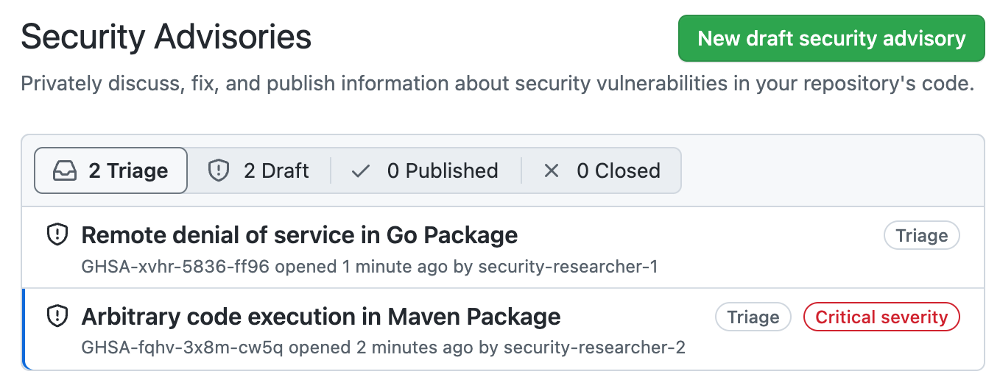
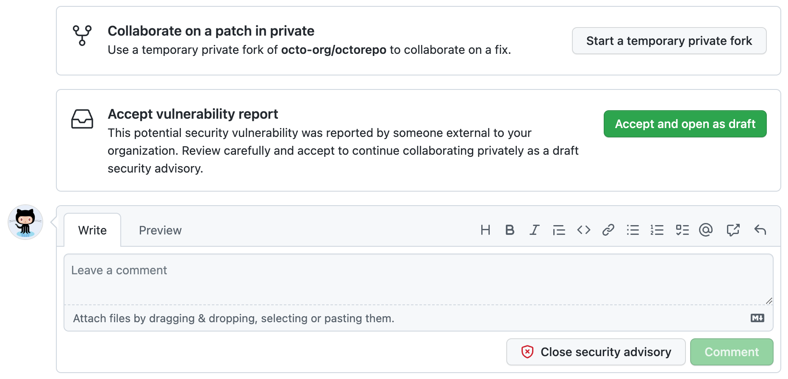

Repository maintainers can manage security vulnerabilities that have been privately reported to them by security researchers for repositories where private vulnerability reporting is enabled.
When a security researcher reports a vulnerability privately, you are notified and can choose to either accept it, ask more questions, or reject it. If you accept the report, you're ready to collaborate on a fix for the vulnerability in private with the security researcher.
When a new vulnerability is privately reported in a repository, GitHub notifies repository administrators and security managers if:
For more information about configuring notification preferences, see Configuring private vulnerability reporting for a repository.
On GitHub, navigate to the main page of the repository.
Under the repository name, click the Security and quality tab. If you cannot see the " Security and quality" tab, select the dropdown menu, and then click Security and quality.
In the left sidebar, under "Reporting", click Advisories.
Click the advisory you want to review. An advisory that was reported privately has a status of Triage.

Carefully review the report, then choose how to proceed.
To collaborate on a patch in private, click Start a temporary private fork to create a place for further discussions with the contributor. This does not change the status of the proposed advisory from Triage.
To accept the reported vulnerability, click Accept and open as draft to accept the vulnerability report as a draft advisory on GitHub. If you choose this option:
To ask for more information, or to open a discussion with the reporter, you can comment on the advisory. Any comments are visible only to the reporter and to any collaborators on the advisory.
If you have enough information to determine that the problem the reporter describes is not a security risk, click Close security advisory. Where possible, you should add a comment explaining why you don't consider the report a security risk before you close the advisory.
